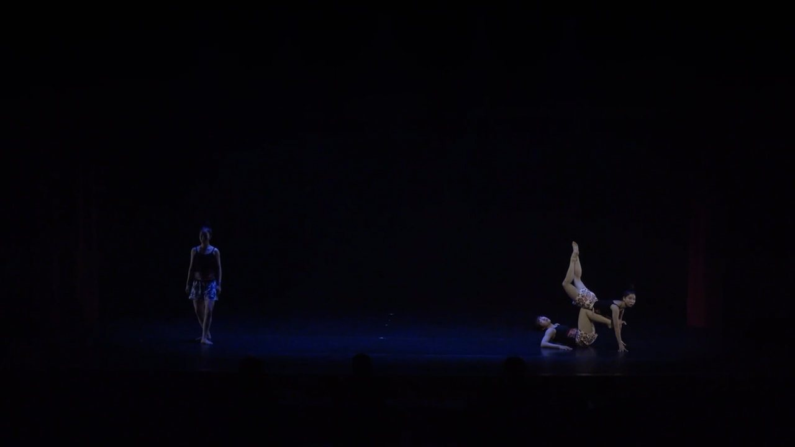

Watch excerptVimeo · 2024Doomsday Festival: Going Too Far종말페스티벌: 뇌절
The last signals of humanity, resonating in chaos.
The end of humankind, read through communication. As the environment collapses, bodies become biological antennae whose nervous systems rewire, sending signals no one can yet decode.
MovementMechanical everyday phrases break into trembling, antenna-like gestures, split into each dancer’s own signal, then gather into one body that keeps transmitting.
Earlier version (invited performance, 2022): vimeo.com/1236076076